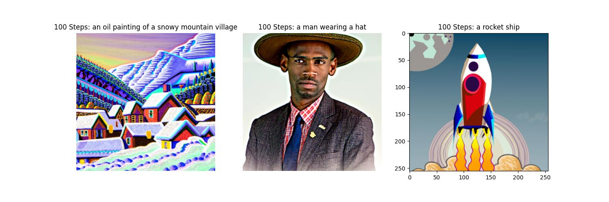
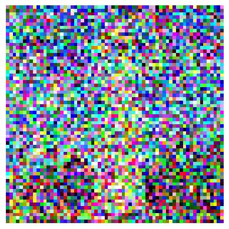
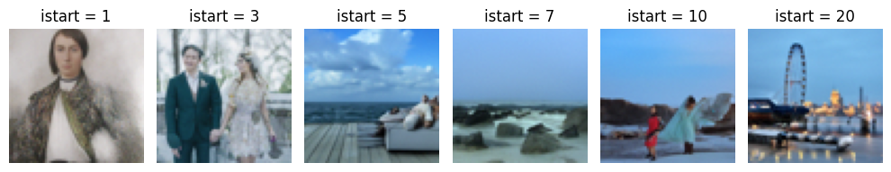

Project 5 : Fun with Diffusion Models!
Part A : The Power of Diffusion Models!
Part 0: Setup

-> Used seed = 2024
As the number of inference steps increase, rendered image quality increases.
Image rendered with inference steps of 100 is more detailed and clearer.
Part 1: Sampling Loops
1.1 Implementing the Forward Process
Campanile
Noisy Campanile at t = 250
Noisy Campanile at t = 500

Noisy Campanile at t = 750
1.2 Classical Denoising
Campanile
Gaussian Denoising at t = 250
Gaussian Denoising at t = 500.
Gaussian Denoising at t = 750
1.3 One-Step Denoising
1.4 Iterative Denoising
1.5 Diffusion Model Sampling
1.6 Classifier-Free Guidance (CFG)
1.7 Image-to-image Translation

1.7.1 Editing Hand-Drawn and Web Images
1.7.2 Inpainting
1.7.3 Text-Conditional Image-to-image Translation
1.8 Visual Anagrams
Oil painting
Campfire
Barista
Rocket ship
Amalfi Coast
Waterfall
1.9 Hybrid Images
Skull and waterfall
Pencil and rocket ship
Amalfi and snowy mountatain village
Part B: Diffusion Models from Scratch!
Part 1: Training a Single-Step Denoising UNet
1.1 Implementing the UNet
1.2 Using the UNet to Train a Denoiser
1.2.1 Training
1.2.2 Out-of-Distribution Testing
Part 2: Training a Diffusion Model
2.1 Adding Time Conditioning to UNet
2.2 Training the UNet
2.3 Sampling from the UNet
2.4 Adding Class-Conditioning to UNet
2.5 Sampling from the Class-Conditioned UNet